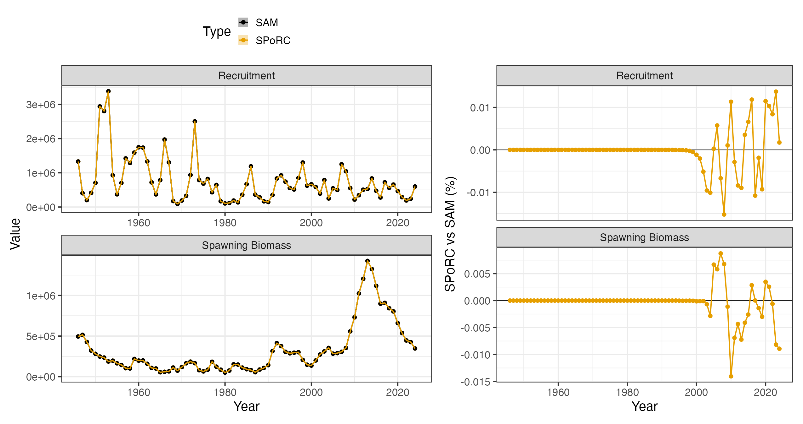
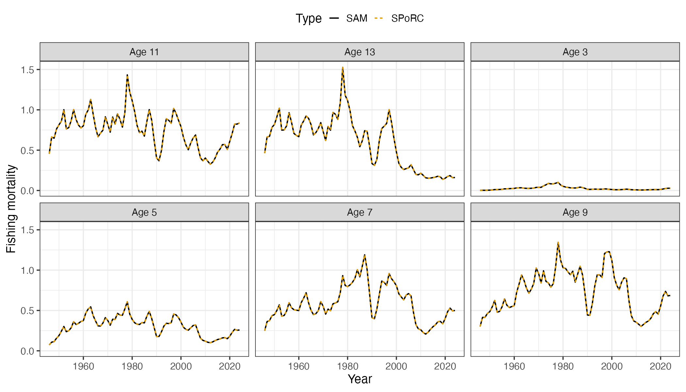
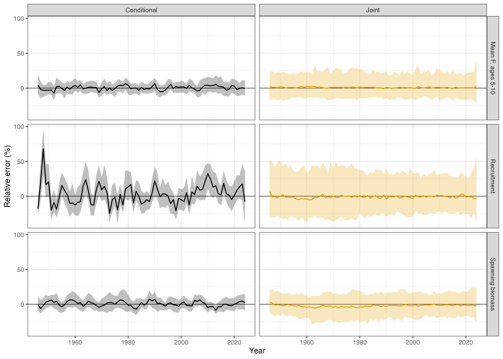
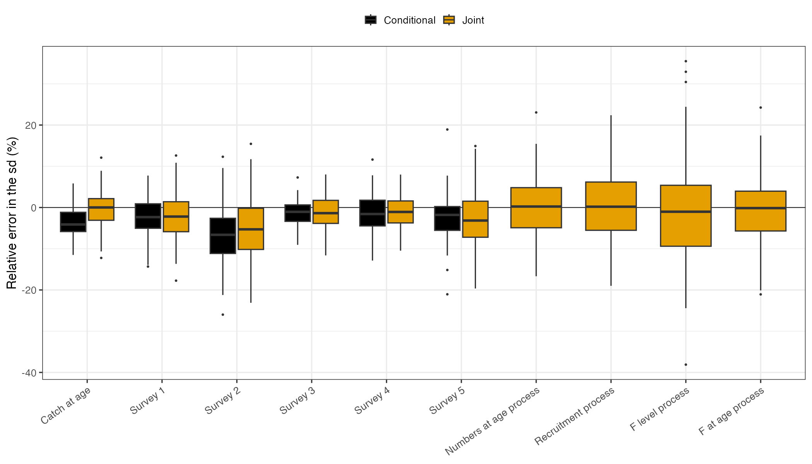

Northeast Arctic Cod (SAM bridge)
Source:vignettes/ai_nea_cod_case_study.Rmd
ai_nea_cod_case_study.RmdOverview
This case study bridges the State-space Assessment Model (SAM), the
model ICES uses for many of its age-structured assessments, into
SPoRC for Northeast Arctic cod. We use the stock’s input
files from the ICES Arctic Fisheries Working Group, 1946 to 2024 at ages
3 to 15 with a plus group, fit through samjr, an R
implementation of SAM that returns the same fits as SAM itself, so that
every number we compare against is SAM’s own.
SAM differs from the other assessments bridged in these case studies
in three ways, and each shapes a part of the specification below. There
are no composition data: catch at age and survey indices at age enter
directly as lognormal observations, each age with its own catchability
in the surveys. Fishing mortality is not a product of an annual level
and a selectivity curve but a separate log F for each age, and these
follow correlated random walks through time. Finally, numbers at age are
themselves a state, so that survival from one age to the next is subject
to process error rather than being a deterministic consequence of
mortality. SPoRC fits catch and survey indices at age
directly, and holds the numbers at age, recruitment, fishing mortality
and selectivity as random effects, so the specification reads as an
ordinary one rather than a translation.
| Component | Years | Ages | Observations | Likelihood |
|---|---|---|---|---|
| Catch at age | 1946 to 2023 | 3 to 15 | 1,002 | Lognormal |
| Norwegian bottom trawl survey, first series | 1981 to 2013 | 3 to 12 | 290 | Lognormal |
| Norwegian bottom trawl survey, second series | 2014 to 2024 | 3 to 12 | 110 | Lognormal |
| Norwegian acoustic survey | 1985 to 2024 | 3 to 12 | 383 | Lognormal |
| Russian swept area survey | 1982 to 2017 | 3 to 12 | 336 | Lognormal |
| Ecosystem survey | 2004 to 2023 | 3 to 12 | 170 | Lognormal |
SAM integrates out the 293 observations that are missing inside an otherwise observed year and age range, so that they contribute nothing to its likelihood, and we therefore leave them out of the fit rather than treating them as zeros. In the following, we first walk through the specification in the order of the setup calls, then compare the fit with SAM’s, and finally use a self test to ask whether the model recovers what it estimates when it is given data it generated itself.
Model dimensions
The stock is a single population in a single region, with one sex and one season, since SAM fits the year as one time step. The five surveys are each their own fleet, and the catch is one fleet.
input_list <- Setup_Mod_Dim(
n_pop = 1,
years = years,
ages = ages,
lens = NA,
n_regions = 1,
n_sexes = 1,
n_seas = 1,
n_fish_fleets = 1,
n_srv_fleets = n_srv,
verbose = FALSE
)Recruitment
SAM has no stock-recruitment relationship. Recruitment at age 3 follows a random walk on the log scale, the first year is free of any penalty, and there is no bias correction. We therefore fit recruitment deviations as a random walk with the first deviation unpenalized, keep the mean recruitment fixed so that the deviations hold recruitment outright, and read the walk’s standard deviation from the second of the two recruitment variability parameters. The initial numbers at age are free parameters in SAM, so they are estimated here without a penalty, and spawning is on January 1, since SAM’s proportions of fishing and natural mortality before spawning are zero for this stock.
input_list <- Setup_Mod_Rec(
input_list,
rec_model = "mean_rec",
RecDevs_model = "rw",
dont_pen_recdev_first = 1,
sigmaR_spec = "fix_early_est_late",
sigmaR_switch = 1,
do_rec_bias_ramp = 0,
init_age_strc = "free",
equil_init_age_strc = "stoch_all_no_pen",
t_spawn = 0,
ln_global_R0_spec = "fix",
ln_global_R0 = sam$logN[1, 1]
)Biological dynamics
Weight, maturity and natural mortality at age come directly from the
ICES files and are fixed. The survival process is where SAM differs most
from a conventional assessment: the log numbers at age in each year are
the previous year’s survivors plus an independent normal deviation with
one standard deviation shared across ages, so a cohort can gain or lose
fish beyond what natural and fishing mortality account for. In
SPoRC this is the state-space numbers at age, applied to
every age above the first and every year after the first, with a single
process standard deviation across ages.
input_list <- Setup_Mod_Biologicals(
input_list,
WAA = d$WAA,
WAA_fish = d$WAA_fish,
WAA_srv = d$WAA_srv,
MatAA = d$MatAA,
fit_lengths = 0,
M_spec = "fix",
Fixed_natmort = d$natmort,
NAA_re = "iid",
NAA_re_ages = ages[-1],
NAA_re_years = years[-1],
NAA_sigma_spec = "est",
NAA_sigma_ageblk_spec_vals = list(seq_len(n_ages))
)Movement and tagging
There is one region and no tagging data.
input_list <- Setup_Mod_Movement(input_list, use_fixed_movement = 1, do_recruits_move = 0, Fixed_Movement = NA)
input_list <- Setup_Mod_Tagging(input_list, use_conv_fish_tagging = 0)Catch and fishing mortality
The catch at age is the whole of the fishery likelihood, so the aggregate catch is left out. We supply it as missing rather than as zero, which is what keeps the fleet fishing in every year: a zero would be read as a closure. Each age is a lognormal observation about the predicted catch at age, and the observation error key gives the catch one standard deviation across all ages, as SAM’s key does for this stock.
Fishing mortality is where the two models are written differently.
SAM estimates a log F for each age and year, and the year to year
changes are correlated across ages with compound symmetry, meaning every
pair of ages shares the same correlation. SPoRC writes log
F at age as an annual level plus a selectivity at age, and when both
follow random walks the change in log F at an age is the sum of a change
shared by every age and a change of its own. The changes then have
variance
and covariance
between any two ages, which is compound symmetry with
and
,
where
is the standard deviation of the annual level’s walk and
that of each age’s own walk. We therefore fix the mean of the annual
level at zero and let the two walks hold log F at age between them. The
identity holds for the likelihood once the random effects are integrated
out, which is the quantity both models maximize.
input_list <- Setup_Mod_Catch_and_F(
input_list,
ObsCatch = array(NA, dim = c(1, n_yrs, 1, 1)),
UseCatch = array(0, dim = c(1, n_yrs, 1, 1)),
catch_units = "abd",
ObsCatchAA = d$ObsCatchAA,
UseCatchAA = d$UseCatchAA,
CatchAA_LikeType = "lognormal",
CatchAA_Type = "spltRaggS",
sigmaCAA_key = d$sigmaCAA_key,
sigmaCAA_spec = "est",
sigmaC_spec = "fix",
ln_F_mean_spec = "fix",
Fdev_model = "rw",
sigmaF_spec = "est_all",
Use_F_pen = 1
)There is no fishery index or fishery composition, so those are switched off.
input_list <- Setup_Mod_FishIdx_and_Comps(
input_list,
ObsFishIdx = array(1, dim = c(1, n_yrs, 1, 1)),
ObsFishIdx_SE = array(0.1, dim = c(1, n_yrs, 1, 1)),
UseFishIdx = array(0, dim = c(1, n_yrs, 1, 1)),
ObsFishAgeComps = array(0, dim = c(1, n_yrs, 1, n_ages, 1, 1)),
UseFishAgeComps = array(0, dim = c(1, n_yrs, 1, 1)),
ISS_FishAgeComps = array(0, dim = c(1, n_yrs, 1, 1, 1)),
ObsFishLenComps = array(0, dim = c(1, n_yrs, 1, 1, 1, 1)),
UseFishLenComps = array(0, dim = c(1, n_yrs, 1, 1)),
ISS_FishLenComps = array(0, dim = c(1, n_yrs, 1, 1, 1)),
fish_idx_type = "none",
FishAgeComps_LikeType = "none",
FishLenComps_LikeType = "none",
FishAgeComps_Type = "none_Year_1-terminal_Fleet_1",
FishLenComps_Type = "none_Year_1-terminal_Fleet_1"
)Survey index at age
Each survey index at age is a lognormal observation about the survey’s catchability at that age times the numbers available at the time of the survey, which is the fraction of the year elapsed when the survey takes place, so the Russian swept area survey late in the year sees cohorts after most of a year’s mortality while the Norwegian surveys in the first quarter see them early. The observation error key gives each survey one standard deviation across its ages. As for the catch, the aggregate index is switched off, since the observations at age are the whole of the survey likelihood.
input_list <- Setup_Mod_SrvIdx_and_Comps(
input_list,
ObsSrvIdx = array(1, dim = c(1, n_yrs, 1, n_srv)),
ObsSrvIdx_SE = array(0.1, dim = c(1, n_yrs, 1, n_srv)),
UseSrvIdx = array(0, dim = c(1, n_yrs, 1, n_srv)),
ObsSrvIdxAA = d$ObsSrvIdxAA,
UseSrvIdxAA = d$UseSrvIdxAA,
SrvIdxAA_LikeType = "lognormal",
SrvIdxAA_Type = "spltRaggS",
sigmaSrvIdxAA_key = d$sigmaSrvIdxAA_key,
sigmaSrvIdxAA_spec = "est",
ObsSrvAgeComps = array(0, dim = c(1, n_yrs, 1, n_ages, 1, n_srv)),
UseSrvAgeComps = array(0, dim = c(1, n_yrs, 1, n_srv)),
ISS_SrvAgeComps = array(0, dim = c(1, n_yrs, 1, 1, n_srv)),
ObsSrvLenComps = array(0, dim = c(1, n_yrs, 1, 1, 1, n_srv)),
UseSrvLenComps = array(0, dim = c(1, n_yrs, 1, n_srv)),
ISS_SrvLenComps = array(0, dim = c(1, n_yrs, 1, 1, n_srv)),
srv_idx_type = c("none", "none", "none", "none", "none"),
SrvAgeComps_LikeType = c("none", "none", "none", "none", "none"),
SrvLenComps_LikeType = c("none", "none", "none", "none", "none"),
SrvAgeComps_Type = c("none_Year_1-terminal_Fleet_1", "none_Year_1-terminal_Fleet_2", "none_Year_1-terminal_Fleet_3",
"none_Year_1-terminal_Fleet_4", "none_Year_1-terminal_Fleet_5"),
SrvLenComps_Type = c("none_Year_1-terminal_Fleet_1", "none_Year_1-terminal_Fleet_2", "none_Year_1-terminal_Fleet_3",
"none_Year_1-terminal_Fleet_4", "none_Year_1-terminal_Fleet_5")
)Fishery selectivity
The selectivity is free at each age on the log scale, so together with the annual level it holds log F at age outright, and it walks through time as described above. SAM couples the F states of ages 14 and 15, which we reproduce by sharing both the selectivity value and its walk between those two ages; sharing one without the other would let the coupled ages walk apart. The first year’s log F at age sits in the base selectivity values rather than in the walk, which matches SAM’s first F state.
fish_bin_groups <- list(1, 2, 3, 4, 5, 6, 7, 8, 9, 10, 11, 12:13)
input_list <- Setup_Mod_Fishsel_and_Q(
input_list,
fish_sel_model = "nonparfree_Fleet_1",
fish_sel_blocks = "none_Fleet_1",
fish_q_blocks = "none_Fleet_1",
fish_fixed_sel_pars_spec = "est_all",
fish_q_spec = "fix",
fish_sel_nonpar_est_bins = list(list(fish_bin_groups)),
cont_tv_fish_sel = "rw_Fleet_1",
fishsel_pe_pars_spec = "est_shared_b",
fish_sel_devs_spec = "est_shared_b",
fishsel_devs_shared_bins = fish_bin_groups,
fishsel_dont_est_dev_first = 1
)Survey selectivity
SAM gives each survey its own catchability at each age, with ages 11
and 12 sharing one value. In SPoRC this is a free
selectivity at age with catchability fixed at one, so that the
selectivity value at an age is that age’s log catchability. Ages 13 to
15 are never observed by the surveys and share the value of the oldest
observed ages, which leaves them without any influence on the fit.
srv_bin_groups <- list(1, 2, 3, 4, 5, 6, 7, 8, 9:13)
input_list <- Setup_Mod_Srvsel_and_Q(
input_list,
srv_sel_model = c("nonparfree_Fleet_1", "nonparfree_Fleet_2", "nonparfree_Fleet_3", "nonparfree_Fleet_4", "nonparfree_Fleet_5"),
srv_sel_blocks = c("none_Fleet_1", "none_Fleet_2", "none_Fleet_3", "none_Fleet_4", "none_Fleet_5"),
srv_q_blocks = c("none_Fleet_1", "none_Fleet_2", "none_Fleet_3", "none_Fleet_4", "none_Fleet_5"),
srv_fixed_sel_pars_spec = c("est_all", "est_all", "est_all", "est_all", "est_all"),
srv_q_spec = c("fix", "fix", "fix", "fix", "fix"),
cont_tv_srv_sel = c("none_Fleet_1", "none_Fleet_2", "none_Fleet_3", "none_Fleet_4", "none_Fleet_5"),
srv_sel_nonpar_est_bins = list(list(srv_bin_groups), list(srv_bin_groups), list(srv_bin_groups),
list(srv_bin_groups), list(srv_bin_groups)),
t_srv = array(d$srv_time, dim = c(1, 1, n_srv))
)Weighting
Every likelihood component enters with a weight of one. By default
SPoRC adds a small constant inside the logarithm of an
index to protect against zeros, but SAM adds nothing, and the smallest
survey indices for this stock are small enough that the constant moves
the likelihood in the sixth decimal place, so we set it to zero.
input_list <- Setup_Mod_Weighting(
input_list,
Wt_Catch = 1,
Wt_FishIdx = 1,
Wt_SrvIdx = 1,
Wt_Rec = 1,
Wt_F = 1,
Wt_Tagging = 0,
addtosrvidx = 0,
addtofishidx = 0,
Wt_FishAgeComps = array(1, dim = c(1, n_yrs, 1, 1, 1)),
Wt_FishLenComps = array(1, dim = c(1, n_yrs, 1, 1, 1)),
Wt_SrvAgeComps = array(1, dim = c(1, n_yrs, 1, 1, n_srv)),
Wt_SrvLenComps = array(1, dim = c(1, n_yrs, 1, 1, n_srv))
)Starting at the SAM estimate
We start the fit at SAM’s estimate, which shortens the fit considerably but does not change where it ends. The first year’s log F at age goes in the base selectivity values and later years enter as their difference from it. SAM’s F standard deviation and correlation are split into the two walk standard deviations through the identity above, the survey catchabilities at age become the survey selectivity values, and the states are seeded at SAM’s numbers at age and recruitment.
input_list$par$ln_F_mean[] <- 0
input_list$par$ln_F_devs[] <- 0
input_list$par$fish_fixed_sel_pars[1, , 1, 1, 1] <- sam$logFF[1, ]
for(y in 2:n_yrs) input_list$par$ln_fishsel_devs[1, y, , 1, 1] <- sam$logFF[y, ] - sam$logFF[1, ]
sd_F <- exp(sam$logsdF[1])
input_list$par$ln_sigmaF[] <- log(sd_F * sqrt(sam$rho)) # change shared by every age
input_list$par$fishsel_pe_pars[1, , 1, 1] <- log(sd_F * sqrt(1 - sam$rho)) # change each age has alone
input_list$par$ln_srv_q[] <- 0
for(sf in 1:n_srv) {
q_idx <- d$srv_q_key[, sf]
q_idx[is.na(q_idx)] <- max(q_idx, na.rm = TRUE) # unobserved ages read the oldest observed one
input_list$par$srv_fixed_sel_pars[1, , 1, 1, sf] <- sam$logQ[q_idx]
}
input_list$par$ln_sigmaCAA[] <- sam$logSdLogObs[1]
for(sf in 1:n_srv) input_list$par$ln_sigmaSrvIdxAA[, 1, sf] <- sam$logSdLogObs[1 + sf]
input_list$par$ln_sigmaNAA[] <- sam$logSdLogN[2]
input_list$par$ln_sigmaR[2, 1, 1] <- sam$logSdLogN[1]
input_list$par$ln_InitDevs[1, 1, , 1] <- sam$logN[1, 2:n_ages]
input_list$par$ln_NAA[1, 1, , 1, , 1] <- sam$logN
input_list$par$ln_RecDevs[] <- 0
for(y in 2:n_yrs) input_list$par$ln_RecDevs[1, 1, y] <- sam$logN[y, 1] - sam$logN[1, 1]Fitting and comparison
SAM treats its first year of log F at age as a random effect with a flat prior, so we integrate the base selectivity values out along with the numbers at age, the recruitment deviations, the initial numbers at age and both F walks. Left as fixed effects instead, these twelve values cost 3.99 negative log likelihood units, although spawning biomass, recruitment and mean F move by less than 0.02 percent.
re_names <- c("ln_NAA", "ln_RecDevs", "ln_InitDevs", "ln_fishsel_devs", "ln_F_devs", "fish_fixed_sel_pars")
fit <- fit_model(input_list$data, input_list$par, input_list$map, random = re_names,
do_optim = TRUE, newton_loops = 3, silent = TRUE)
sd_rep <- RTMB::sdreport(fit, getJointPrecision = TRUE) # the joint self test draws its parameters from thisThe fit reproduces SAM’s marginal negative log likelihood,
1859.782559 in both, with a maximum gradient of about
and a positive definite Hessian over 55 fixed effects and 2,054 random
effects. Spawning biomass, recruitment and fishing mortality at age
agree with SAM’s to the precision of either optimizer. Note that
SPoRC reports female spawning biomass, which with one sex
and an even sex ratio is half of the spawning biomass SAM reports, and
the SAM series below is halved to match.


Self test
A bridge shows that the two models compute the same thing; a self test asks a different question, namely whether the fitted model, given data generated by itself, returns the quantities it estimates. We simulate from the fitted model, refit each simulated data set, and compare the estimates with the values the simulation ran on. Specifically, we use two designs. In the conditional simulation design, the parameters and the numbers at age, recruitment and fishing mortality are kept at the fit’s estimates, so only the observations are new, and the self test measures how well the observations determine the population. In the joint simulation design, each replicate first draws its parameters from the fit’s joint uncertainty (the precision of the fixed and random effects together) and then draws every new processes at those parameters, so each replicate is a new population history with parameters of its own, and the self test also measures whether the process standard deviations are recovered.
what <- c("SSB", "Rec", "tot_FAA")
what_par <- c("ln_sigmaCAA", "ln_sigmaSrvIdxAA", "ln_sigmaNAA", "ln_sigmaR", "ln_sigmaF", "fishsel_pe_pars")
# conditional simulations: observations drawn about the fit's own population
st_cond <- simulation_self_test(data = fit$data, parameters = input_list$par, mapping = input_list$map,
random = re_names, rep = fit$rep, sd_rep = sd_rep, n_sims = 50,
what = what, what_par = what_par)
# joint simulation: parameters drawn from the fit's joint precision, then every process drawn new each time,
# with enough replicates to read a bias of about one percent
st_joint <- simulation_self_test(data = fit$data, parameters = input_list$par, mapping = input_list$map,
random = re_names, rep = fit$rep, sd_rep = sd_rep, obj = fit, n_sims = 150,
sim_type = "joint", what = what, what_par = what_par)
# both designs again with the observation error made negligible, standard deviations of 0.001
st_perfect <- simulation_self_test(data = fit$data, parameters = input_list$par, mapping = input_list$map,
random = re_names, rep = fit$rep, sd_rep = sd_rep, n_sims = 3,
perfect_data = TRUE, what = what, what_par = what_par)
st_perfect_joint <- simulation_self_test(data = fit$data, parameters = input_list$par, mapping = input_list$map,
random = re_names, rep = fit$rep, sd_rep = sd_rep, obj = fit, n_sims = 5,
perfect_data = TRUE, sim_type = "joint", what = what, what_par = what_par)
# each replicate compared with the population it ran on
rel_err <- (st_joint$SSB - st_joint$truth$SSB) / st_joint$truth$SSBUnder the conditional design spawning biomass, recruitment and mean F at ages 5 to 10 are recovered without bias, and so are the observation and F standard deviations, but the two population process standard deviations come back slightly low. In theory, this is what conditional simulations should give: the replicates share the fit’s estimates of the deviations, which are shrunk toward zero and vary less than the fitted standard deviation describes. Thus, looking at this using the joint design, nearly every replicate refits, recruitment and mean F are unbiased, and all four process standard deviations are recovered. The survey standard deviations come back a little low, likely due to the small-sample bias of a MLE variance, and spawning biomass a little low because it is reported at the mode of the log numbers at age, which sits below their mean, most of all for the plus group, whose fish are the least observed and make up most of the spawning biomass; an epsilon bias corrected estimate removes it (in theory). Nonetheless, neither biases comes from a disagreement between the operating and estimation models. With the observation error made negligible the process standard deviations return to their true values under the joint design and spawning biomass is generally unbiased under both.

